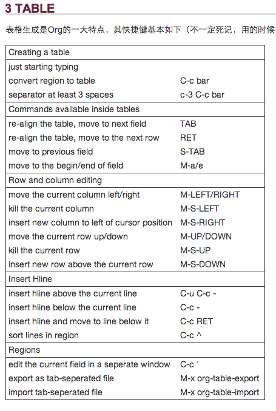
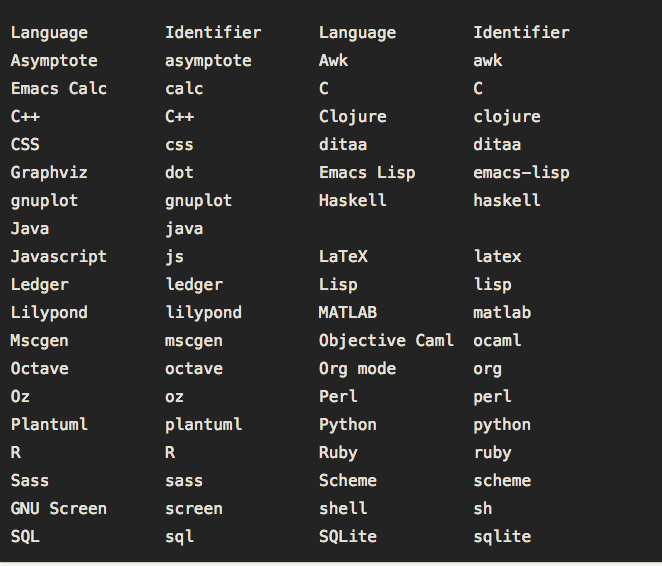

ORG MODE 笔记 (Org Mode 的强大，其实我不懂)
1 install org
M-x list-packages Enter Ctrl+s org Enter Click the "Install Button"
2 uninstall and reinstall
M-x package-list Enter Ctrl+s org enter Type the letter d Then press x
3 Org Mode 标记语言的一些疑问
可以访问网页
在org-mode中，
粗体
斜体
删除线
下划线
下标： H_2 O
上标： E=mc^2
等宽字： git 或者 git
以上都是转义字符，但当在文档中需要输入这些转义字符的时候该怎么办呢？
3.1 单个org文件的解决办法
可以在文件开头的地方用下面的设置来关闭这个功能。
用"{}"来替代"_" 此时：a_b 与 a_{b} 相同效果。
4 Org Mode 中重要文字的颜色区分
@<font color="#ff0000"> //此处填写要标记颜色的文字 @</font>
5 Org Mode 快捷键
5.1 输入 <s TAB 会补全#+BEGIN_SRC #+END_SRC, 并等待输入src的语言。
5.2 输入 <e TAB 会补全#+BEGIN_EXAMPLE
5.3 C-c C-x C-v org-toggle-inline-image 用來顯示當前頁面插入的圖片
5.4 链接
C-c C-l 编辑链接 C-c C-o 打开链接
6 org Mode 的标记语言
在 Emacs Org Mode 里，默认情况下 _ 这种字符会被当成标记语言来进行转义。有的时候，如果你只是写写文章，这种默认的转义，会让你很不方便，尤其是你在写一篇介绍技术的文章，里面出现的变量名有很多的下划线。这时，你会说：”Oh, my god! 难道要我一个一个去标记不让 _ 转义么？”
6.1 如何让orgmode在默认情况下，不去转义'_'字符呢
可以在org文件的开头，用下面的设置来关闭这个功能。
#+OPTIONS ^:nil
也可以用下面的设置
#+OPTIONS ^:{}
这样，只有写成下面这个样子的时候才转义
a_{b}
'_'后面的被'{}'括起来的内容才被转义， 而a_b，就按普贤通方式来显示。
6.2 如何在导出html时，不插入table of content
6.3 修改作者
6.4 禁用下划线转义
#+OPTIONS: ^:nil (setq-default org-use-sub-superscripts nil)
6.5 生成目录表
#+OPTIONS: toc:t ^:nil author:nil num:2 也可以设置 org-export-with-toc 这个变量 (setq org-export-with-toc t) 如果只想针对前面两个级别生成目录表，可以设置该值为相应的数字 #+OPTIONS: toc:2 ^:nil author:nil num:2
7 org mode在输出html的时候，不换行
可以在org文件的最前面加上
#+OPTIONS: \n:t
8 org mode 在输出html的时候，code source 高亮
(require 'htmlize) (setq org-src-fontify-natively t)
9 table 操作
- 创建和转换表格
| 快捷键 | 命令 | 说明 |
|---|---|---|
| C-c 竖线 | 创建或转换成表格 |
- 调整和区域移动
| 快捷键 | 命令 | 说明 |
|---|---|---|
| C-c C-c | 调整表格，不移动光标 | |
| TAB | 移动到下一区域，必要时新建一行 | |
| S-TAB | 移动到上一区域 | |
| RET | 移动到下一行，必要时新建一行 |
- 编辑行和列
| 快捷键 | 命令 | 说明 |
| M-LEFT/RIGHT | 移动列 | |
| M-UP/DOWN | 移动行 | |
| M-S-LEFT/RIGHT | 删除/插入列 | |
| M-S-UP/DOWN | 删除/插入行 | |
| C-c - | 添加水平分割线 | |
| C-c RET | 添加水平分割线并跳到下一行 | |
| C-c ^ | 根据当前列排序，可以选择排序方式 |

10 大纲相关的快捷键
- 折叠大纲
| 快捷键 | 命令 | 说明 |
|---|---|---|
| S-TAB | org-shifttab | 循环切换整个文档的大纲状态（三种状态：折叠，打开下一级，打开全部） |
| TAB | org-cycle | 循环切换光标所在大纲的状态 |
- 在大纲之间移动
| 快捷键 | 命令 | 说明 |
|---|---|---|
| C-c C-n/p | 下/上一标题 | |
| C-c C-f/b | 下/上一标题（仅限同级标题） | |
| C-c C-u | 跳到上一级标题 | |
| C-c C-j | 切换到大纲浏览状态 |
- 基于大纲的编辑
| 快捷键 | 命令 | 说明 |
|---|---|---|
| M-RET | 插入一个同级标题 | |
| M-S-RET | 插入一个同级TODO 标题 | |
| M-LEFT/RIGHT | 将当前标题升/降级 | |
| M-S-LEFT/RIGHT | 将子树升/降级 | |
| M-S-UP/DOWN | 将子树上/下移 | |
| C-c * | 将本行设为标题/正文 | |
| C-c C-w | 将子树或区域移动到另一标题处（跨缓冲区） | |
| C-x n s/w | 只显示当前子树/返回 | |
| C-c C-x b | 在新缓冲区显示当前分支（类似C-x n s) | |
| C-c / | 只列出包含搜索结果的大纲，并高亮，支持多种搜索方式 | |
| C-c C-c | 取消高亮 |
更多的快捷键可以通过C-c C-x C-h查看。
- 大纲的显示方式
默认的大纲显示没有缩进，显得有些乱。可以用 M-x org-indent-mode切换到另一种显示方式：
11 org 支持的语言

12 ditaa
参数说明
| param | long param | desc |
| -e | –encoding | 指定编码 |
| -E | –no-separation | 嵌套矩形是否分隔,缺省有分隔,设置后无 |
| -r | –round-corners | 圆角矩形 |
| -s | –scale | 矩形大小 ,比如 0.8 |
| -o | –overwrite | 如果有同名文件覆盖 |
| -S | –no-shadows | |
| -A | –no-antialias | |
| -v | –verbose | |
| -h | –help | |
| -t | –tabs | |
| -h | –html |
图形规则
圆角矩形: 用/ \ 作为图形的四个顶角 color cxxx xxx别表示RGB 也可以采用预设的值: cRED cGRE cBLK cBLU cPNK cYEL tags 在矩形内部标记: {d} document {s} storage {io} input/output dashed lines 虚线 竖虚线 :: : 横虚线 :: =
* 矩形内的文本: o :: · 号